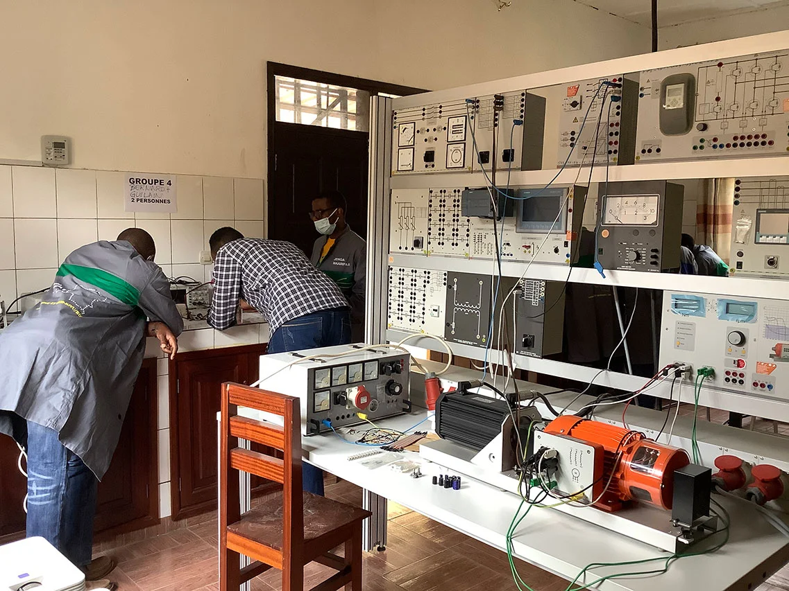
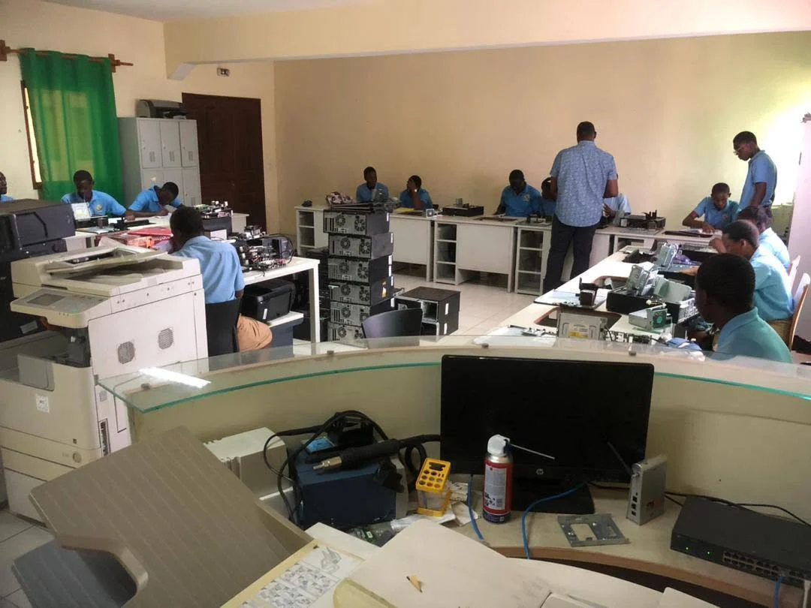
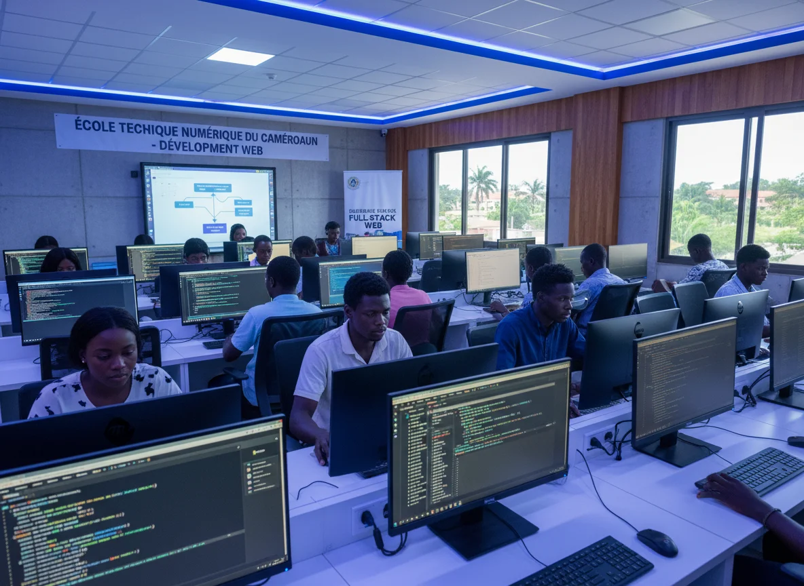
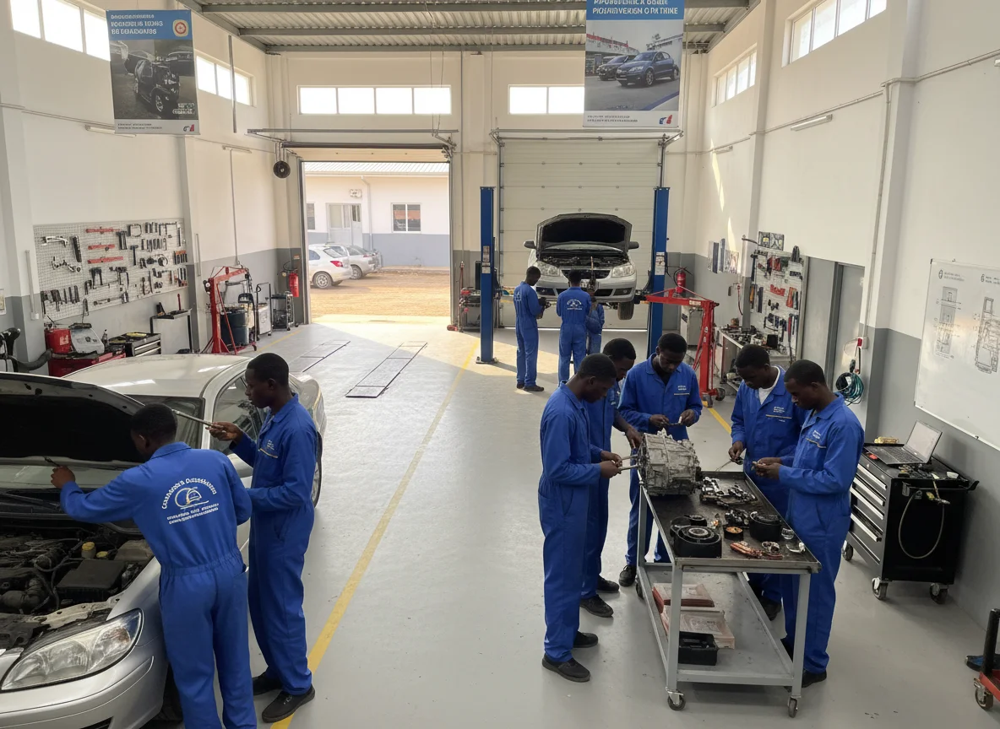

PRG · MEHMaintenance des Équipements Hospitaliers
La filière Maintenance des Équipements Hospitaliers (MEH) forme des techniciens qualifiés capables d'assurer l'installation, la maintenance préventive et corrective, ainsi que le contrôle du leurs fonctionnement...
En savoir plus
PRG · MINFMaintenance Informatique
La filière Maintenance Informatique (MINF) forme des techniciens en informatique. Elle développe des compétences techniques essentielles. Une formation tournée vers les métiers du numérique...
En savoir plusInternet Informatique Industrielle
La filière Internet et Informatique Industrielle (III) forme des techniciens spécialisés en réseaux et systèmes connectés. Elle permet d'acquérir des compétences techniques adaptées au monde industriel...
En savoir plus
PRG · DMWDéveloppement Multimédia Web
La filière Développement Multimédia Web (DMW) forme des professionnels capables de concevoir, développer et gérer des solutions numériques innovantes, les élèves acquièrent des compétences en programmation...
En savoir plus
PRG · MVAMécanique et Véhicules Automobiles
La filière Maintenance des Véhicules Automobiles (MVA) forme des techniciens spécialisés en maintenance automobile. Elle développe des compétences en diagnostic et en entretien des véhicules...
En savoir plus PRG · PA
PRG · PA
Production Automobile
La filière Production Animale (PA) forme des techniciens spécialisés dans les métiers de l'élevage et de la production animale. Les élèves acquièrent des compétences en nutrition animale, en reproduction, en santé animale...
En savoir plusProduction et Vente
La filière Production Végétale (PV) prépare des professionnels capables de produire et de gérer des cultures vivrières et maraîchères. Les élèves développent des compétences en protection des cultures, en irrigation...
En savoir plusOrganisation et Réalisation du Gros Œuvre
La filière Organisation et Réalisation du Gros Œuvre (ORGO) forme des techniciens spécialisés dans les métiers de la construction et du bâtiment. Les élèves acquièrent des compétences en lecture de plans...
En savoir plus